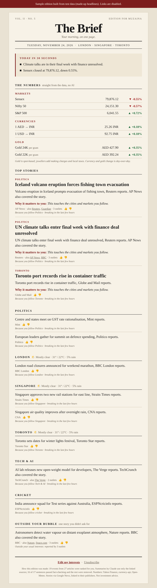

Your morning, on one page.
A personal morning newspaper that understands events, ranks them for you, and fact-checks its own AI.
One email, at the time each reader chooses: their markets, currencies, gold, politics, the cities their people live in and their own topics, edited down to a five-minute read.
The problem
Six apps, fifteen minutes, every morning.
Every morning I opened a broker, a news app, a gold-rate site, a currency converter, the weather and the family group chat to piece together what changed overnight.
My family lives in three different cities, so "local news" means three places, not one. No app knows that, and every feed is the same for everyone.
Newsletters are well written but generic. Aggregators are personal but endless. The gap is a short, finished, personal edition. The job to be done: "give me everything I care about in one five-minute read."
The product
What lands in your inbox.

Open the interactive demo edition →- Today in 30 secondsThree bullets: the things this reader most needs to know.
- The Numbers, with no AI involvedIndices, watchlist, currencies and gold (in the reader's currency, unit and karat), straight from the data.
- Top stories as eventsOne story per event, with how many outlets covered it, a two-line summary and "why it matters to you".
- A column for each city, with weatherUp to three cities per reader, plus politics by region, tech & AI and their own topics.
- "Why am I seeing this?"Every story explains itself, from the ranker's own signals: "Because you follow your city · reported by 6 outlets".
- Outside your bubbleOne important story a day from outside the reader's interests, on purpose.
- 👍 / 👎 on every storyVotes and clicks feed tomorrow's ranking. Settings can be written in plain English: "Indian markets, my family's city, AI, no cricket."
How it works
Shared work runs once; only personalization runs per reader.
v2 runs in Python on GitHub Actions. A Google Apps Script app with a Google Sheet is the front door: settings, votes and clicks. At each reader's send time it wakes the pipeline. Claude writes; Claude Haiku tags and fact-checks; embeddings come from bge-small.
40 headlines can be 6 stories. Articles are embedded and clustered online; the number of distinct outlets becomes the importance signal, and story memory hides what a reader already saw unless there's news.
events.py · threshold tuned on labelled pairs
A two-stage recommender: retrieval by one interest vector per section, a six-feature interpretable score, MMR diversity, an exploration slot, and a Thompson-sampling bandit that learns each reader's section mix.
ranker.py · every impression logged with its features
Claude writes only from a numbered source pack and cites each sentence. A numbers check and a second model as verifier remove anything unsupported, before the email is sent.
writer.py · numbers never pass through a model
Idempotent sends, per-section fallbacks, a headlines-only mode if the model is down, event-driven dispatch with an hourly safety net.
pipeline.py · brief.yml
Trust by design
The model writes. It doesn't decide what's true.
Each summary goes through three checks before it can reach a reader:
1. Cited sources. Claude sees only the event's articles, numbered, and must cite them sentence by sentence.
2. Numbers check. Every number must appear in the cited sources, exactly or as a rounding.
3. Claim verifier. A second model labels each sentence supported, partial or unsupported; only supported sentences ship.
Prices and rates never pass through a model at all, and headlines are treated as untrusted input, so an instruction hidden in a headline can't add content or links.
In the end-to-end test, a planted invented number and a planted unsupported claim were both removed before sending. The edition's footer tells readers how many sentences passed fact-checking.
How I measure it
No prompt, model or ranker change ships without numbers.
Offline, on every change
A frozen snapshot of real news and a CI suite that fails the build if quality drops:
· Clustering precision / recall / F1 across a threshold sweep
· nDCG@5 for the v2 ranker vs a baseline
· Residual hallucination rate from an independent judge
· Judge-vs-human agreement (Cohen's κ) before the judge is trusted
· Loaded-language rate in politics summaries
Online, with real readers
With fewer than 10 readers, an A/B test between people would be underpowered. Instead, each edition uses team-draft interleaving: stories from the v2 ranker and a v1-style baseline are mixed, and clicks and 👍 are credited to whichever ranker contributed the story. A sign test over reader-days gives the result.
Running Nov 25 – Dec 1, 2026 · readout posted here on Dec 2.
Product decisions
What I chose, and what I deliberately didn't.
| Decision | Why |
|---|---|
| Events, not articles | Importance, deduplication and freshness all depend on knowing which headlines are the same story. |
| The LLM writes but never ranks | LLM ranking would cost readers × candidates calls, vary run to run, and couldn't learn or explain itself. |
| No learned ranking model yet | Too little data with a small pilot. Every impression is logged with its features so one can be trained later. |
| Explanations from the ranker, not the LLM | "Why am I seeing this?" is always true. |
| Interleaving instead of A/B | Within-reader comparison works with a handful of readers. |
| Email, not an app | Zero install, and it's already part of the morning. |
| Headlines and publisher descriptions only | Publisher-friendly: no scraping, every story links to its source. |
Next: a learned ranker from logged impressions, an audio edition for the commute, alerts only when something big moves, Hindi and Arabic sources.